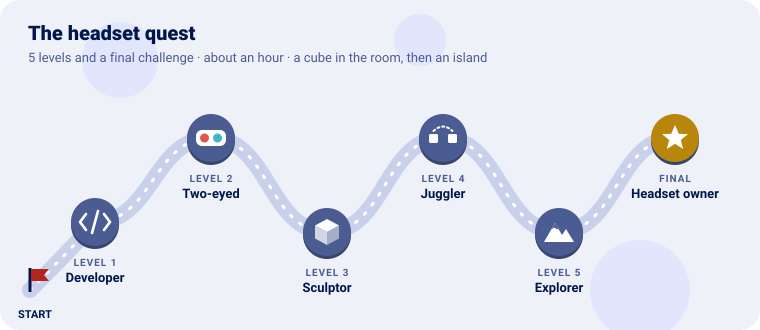

Put a Go program in a Meta Quest 3, one level at a time. Each level teaches one piece of Go for
Meta Quest and ends with a package (.apk) you install on the headset.

We start by letting the computer talk to the headset, then paint each eye a colour of its own, put a cube in the room that stays where it is however you move, give each hand a cube of its own, walk an island with the sticks (and grow into a giant over it), and finally make a program of your own and share it.
🚧 Nothing here has run on a headset yet. Every level builds into a package, but the checkpoints describe what the program is written to do, not what was seen. If a checkpoint does not come true, what is where says what was and was not checked, and the log (level 1) says why.
Every level has the same shape: the idea (explained with something from everyday life), the code, a checkpoint to know it works, and an optional bonus.
You need:
| Why | Where | |
|---|---|---|
| Go 1.25 or later | The compiler; it builds for Android itself | go.dev |
| The Android SDK: build tools and a platform | aapt2, zipalign and apksigner make the package; the platform’s android.jar is what its manifest is checked against |
Android Studio’s SDK manager, or sdkmanager "build-tools;36.0.0" "platforms;android-37" |
| The Android NDK | Its clang compiles the C parts of Go Renderer’s android and openxr |
sdkmanager "ndk;29.0.14206865" (any recent one) |
| adb | Installs and starts the package, and reads its log | sdkmanager platform-tools |
| A Meta Quest 3 (or 3S) and a USB-C cable | Where it runs |
tools/build-apk.sh finds the SDK in ANDROID_HOME and the NDK in ANDROID_NDK_HOME (or in
Homebrew’s android-commandlinetools, on a Mac).
Clone Go for Meta Quest; Go fetches Go Renderer by itself, at the commit go.mod names (its
headset pieces are on its feature/openxr branch until it releases them):
git clone https://github.com/akrck02/go-meta-quest
cd go-meta-quest
Every program file starts with //go:build android: these programs only build for the headset.
| Mission | Pieces | Time |
|---|---|---|
| The headset in developer mode, seen by the computer, and the OpenXR loader downloaded | adb devices, tools/fetch-loader.sh |
15 min |
A headset is a locked room: it runs what its store sells. Developer mode is the key the maker gives programmers: with it, the headset accepts packages from a computer over the cable.
The program will not talk to the headset’s tracking directly. It talks to OpenXR, a standard many headsets share, through a small library from Khronos (the group behind OpenGL), the loader: it finds the headset’s own OpenXR (its runtime) and passes everything on. The loader goes inside every package.
adb devices # the headset, as "device" (not "unauthorized")
tools/fetch-loader.sh # the newest OpenXR loader from Maven Central
fetch-loader.sh reads which version is newest, downloads Khronos’s
openxr_loader_for_android, and keeps its arm64 library in third_party/openxr-loader/ (not
committed: each clone fetches its own).
adb devices lists the headset as device, and third_party/openxr-loader/arm64-v8a/libopenxr_loader.so
exists.
adb logcat -s Go OpenXR| Mission | Pieces | Time |
|---|---|---|
| Each eye a colour of its own, changing slowly | app.Run, frame.Eyes, gles.Functions |
5 min |
A headset is two screens, one in front of each eye, and the program draws a picture for each, 72 times a second. The runtime hands the program, every frame, a framebuffer for each eye: the picture it will show there. Here each picture is only cleared to a colour, the simplest drawing there is, so that if it works, everything under it works: the package, the loader, the session, the pictures.
The colours go round the colour wheel, the right eye half a turn behind the left: red in one eye, cyan in the other.
The program is cmd/clear in this repository:
//go:build android
package main
import (
"log"
"github.com/akrck02/go-meta-quest/app"
"github.com/akrck02/go-renderer/gles"
)
func main() {
seconds := 0.0
err := app.Run(app.Options{ApplicationName: "Clear"}, func(frame app.Frame) bool {
seconds += frame.Seconds // the time since the last frame
if !frame.ShouldRender { // the runtime will not show this frame: draw nothing
return true
}
for index, eye := range frame.Eyes {
red, green, blue := eyeColour(index, seconds) // in cmd/clear/colours.go
functions := frame.Functions
functions.BindFramebuffer(gles.FramebufferTarget, eye.Target)
functions.SetViewport(0, 0, eye.Width, eye.Height)
functions.SetClearColor(red, green, blue, 1)
functions.Clear(gles.ColorBufferBit | gles.DepthBufferBit)
}
return true // false would end the program
})
if err != nil {
log.Fatal(err)
}
}
tools/build-apk.sh ./cmd/clear # build/clear.apk
tools/install.sh build/clear.apk # installs, starts it, and shows its log
Put the headset on: each eye sees a plain colour, a different one, both slowly changing. Close one eye, then the other. The headset’s button with its logo brings the system’s menu; choosing to leave ends the program.
red, green, blue := eyeColour(0, seconds) // the left eye's, for both| Mission | Pieces | Time |
|---|---|---|
| A lit cube, standing still in the room as you move round it | scene.Scene, camera.Rig, gles.SceneRenderer.DrawViews |
10 min |
On a screen, the camera is where the program says. In a headset, the camera is your head: the runtime says, every frame, where each eye is and which way it looks, in metres, in the room. The program draws the scene from there, so a cube put 1.5 m ahead of you stays 1.5 m from where it was, whatever you do: lean in, walk round it, look away and back.
The room’s floor is where the headset says it is, so the cube can stand at eye height. A rig
(camera.Rig) is where the room is in the scene: here the scene is the room, one unit a metre.
Each eye looks through a slightly lopsided window (it sees further to its own side than towards the nose), so each has its own projection. Go Renderer plans the frame once for both (which meshes are seen) and draws it twice.
The program is cmd/cube; here is its heart (the cube’s mesh and placing it are in
cmd/cube/world.go):
made := newWorld() // a scene with a 30 cm cube, hidden until placed
rig := camera.Rig{} // the room is the scene: one metre a unit
var renderer *gles.SceneRenderer
views := make([]gles.View, 2)
poses := make([]graphics.Pose, 2)
fields := make([]graphics.FieldOfView, 2)
err := app.Run(app.Options{ApplicationName: "Cube"}, func(frame app.Frame) bool {
if !frame.ShouldRender {
return true
}
made.place(rig, frame.Head, frame.HeadTracked) // once the head is tracked: 1.5 m ahead, at its height
if renderer == nil {
created, err := gles.NewSceneRenderer(frame.Functions, overlay.Fonts{})
if err != nil {
log.Print(err)
return false
}
renderer = created
}
// The eyes' pictures turn colour to sRGB themselves: the renderer writes linear colour.
renderer.LinearOutput = frame.SRGB
for index, eye := range frame.Eyes {
poses[index], fields[index] = eye.Pose, eye.Field
views[index] = gles.View{Target: eye.Target, Width: eye.Width, Height: eye.Height,
View: rig.EyeView(eye.Pose),
Projection: graphics.PerspectiveFromFieldOfView(eye.Field, near, far),
Eye: rig.EyePosition(eye.Pose)}
}
covering, aspect := camera.CoveringLens(rig, poses, fields, near, far) // one plan for both eyes
renderer.DrawViews(made.scene, covering, aspect, views)
return true
})
tools/build-apk.sh ./cmd/cube
tools/install.sh build/cube.apk
An orange cube, the size of a box you could hold in both arms, an arm and a half ahead of you at eye height, turned so you see three faces, each shaded differently. Walk round it: it stays where it is, and you see its back. Its colours look like the colour, not washed out (that would be the colour turned to sRGB twice).
if frame.Input.PadPressed(input.PadA) {
made.placed = false // place puts it in front of the head again
}
made.place(rig, frame.Head, frame.HeadTracked)| Mission | Pieces | Time |
|---|---|---|
| A small cube in each hand | frame.Hands, Grip, Tracked, rig.Place |
5 min |
The controllers are tracked like the head: each has a pose, where it is held (Grip) and where
it points (Aim). A thing the program puts at a hand’s grip pose moves with the hand. A controller
the headset cannot see (behind your back, put down, asleep) is not tracked, and its cube hides.
It is already in cmd/cube: at the top of each frame,
made.follow(rig, [2]graphics.Pose{frame.Hands[app.LeftHand].Grip, frame.Hands[app.RightHand].Grip},
[2]bool{frame.Hands[app.LeftHand].Tracked, frame.Hands[app.RightHand].Tracked})
and follow (in world.go) puts each 5 cm cube at its hand with rig.Place(grip), or hides it.
A blue cube in your left hand and a green one in your right, inside the controllers’ grips. Put a
controller behind your back: its cube goes. Open the system’s menu: the cubes stay drawn, but the
program does not have the controllers until you come back (frame.Focused is false).
grow := 1 + 2*squeeze[index]
hand.Transform = rig.Place(grips[index]).Multiply(graphics.Scale(graphics.Vector{grow, grow, grow, 0}))| Mission | Pieces | Time |
|---|---|---|
| Stand on an island, walk it with the sticks, and grow into a giant over it | sample.Island(), camera.RigWalk, rig.Scale, world.GroundHeight |
15 min |
Your room is small; the island is not. You can walk a few steps in the room, and the headset moves your eyes on the island just as far. To go further, the program moves the room itself on the island: that is the rig again (level 3). The left stick slides the room the way you look, so you glide over the ground; the right stick turns the room in steps around you. Never smoothly: a view that turns while your head does not makes many people queasy, a quick step does not.
The program never moves your head. The headset says where it is, and the picture must follow it exactly, or the world swims.
Two more things make it feel like a place. The room’s floor follows the ground under your head,
so you climb a hill as you walk up it (world.GroundHeight). And the rig’s scale says how many
of the island’s units a metre of your room is: at 1 you are a person among the houses; at 20 you
are a giant, the island is a model the size of a room, and your hands’ cubes are twenty times
bigger too. Switching keeps your head over the same spot of the ground, so you grow where you stand.
The program is cmd/explorer. Its world (explorer.go) is Go Renderer’s sample island, the rig,
a camera.RigWalk on the island’s ground, and the two hand cubes of level 4:
func newExplorer(world *scene.Scene) *explorer {
made := &explorer{world: world, rig: startRig(world), // on the ground, south of the square
views: make([]gles.View, 2), poses: make([]graphics.Pose, 2), fields: make([]graphics.FieldOfView, 2)}
made.walk = camera.RigWalk{Ground: world.GroundHeight} // the floor follows the ground
// … a cube for each hand, as in cmd/cube
return made
}
// steer: Y or B switches between a person and a giant; the sticks walk and turn.
func (made *explorer) steer(state *input.State, seconds float64, head graphics.Pose, headTracked bool) {
if headTracked && (state.PadPressed(input.PadY) || state.PadPressed(input.PadB)) {
made.rig = rescale(made.rig, head, otherScale(made.rig.Scale), made.walk.Ground)
}
made.walk.Update(state, seconds, head, &made.rig)
}
startRig and rescale are in places.go, plain Go with tests: the first finds the village
square among the island’s nodes and puts the room’s floor on the ground twelve metres south of it,
facing it; the second changes the scale and moves the room so the head stays over the same point.
Every frame, main.go steers, follows the hands and draws both eyes as in level 3. The views are
made into the same slices each frame, so a frame makes no new garbage for the collector to stop
for; at 72 frames a second, a pause shows. The near plane grows with the scale: a giant’s hands
are twenty times further away in the island’s units.
tools/build-apk.sh ./cmd/explorer
tools/install.sh build/explorer.apk
You stand a short walk south of a paved square, in an afternoon light: the square ahead, the houses behind it, trees and the hill around, the sea and its fog far off. Push the left stick: you glide the way you look, up and down the slopes. Flick the right stick: the island turns a step around you. Walk in the room: you walk on the island. Press Y (or B): you are a giant, the island at your feet, still over the same spot; press it again to be yourself.
made.walk = camera.RigWalk{Ground: world.GroundHeight, SpeedMetres: 3}A program of your own, in a module of your own, in the headset, and shared with the notices it must carry.
Hint:
tools/build-apk.shbuilds from the folder it is run in, so it works for any module. Your module needs Go for Meta Quest, which brings Go Renderer with it.
mkdir headset && cd headset
go mod init example.com/headset
go get github.com/akrck02/go-meta-quest@feature/first-stepsYou built Go for a headset: a picture in each eye, a cube that stays in the room, the controllers in your hands, and an island to walk, as a person or as a giant.
| Idea | Difficulty | Hint |
|---|---|---|
| A cube that spins | ⭐ | Turn made.cube.Transform a little every frame by frame.Seconds, and set the node’s Moving |
| The island at night | ⭐ | sample.Night() instead of sample.Island() |
| A scale in between | ⭐⭐ | A third size on X, say 5: the island the size of a house |
| Jump to a place | ⭐⭐ | On A, move rig.Position so the head stands over another node of the island (nodePosition), the floor on its ground |
| You see | Why, and what to do |
|---|---|
adb devices lists the headset as unauthorized |
Put it on and allow USB debugging for this computer |
| The program opens in a flat window | The package lacks com.oculus.intent.category.VR, or it was built from another manifest: build it with tools/build-apk.sh |
| It closes at once; the log says the loader is missing | libopenxr_loader.so is not in the package: run tools/fetch-loader.sh and build again |
build constraints exclude all Go files, or the program prints that it runs on a Meta Quest |
These programs build for Android only: use tools/build-apk.sh, not go build |
| Colours look washed out, too light | The colour was turned to sRGB twice: set renderer.LinearOutput = frame.SRGB |
| On the island, you stand inside the ground or float over it | The floor follows the ground under the head, and the head stands as high above it as it is above the room’s floor: check the room’s floor in the headset’s settings (a guardian drawn at the wrong height puts the floor there too) |
| The cube is on the floor, or above you | It is placed at the head’s height on the first frame shown: start the program standing (or sitting) as you mean to look at it, or bring it back (level 3’s bonus) |